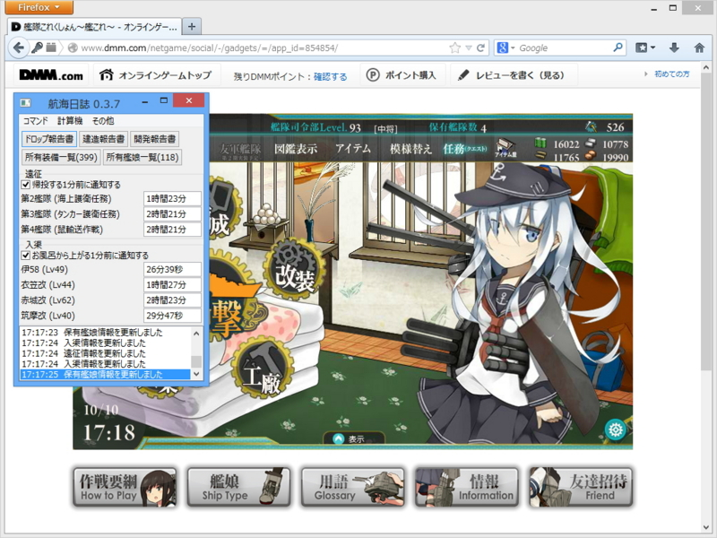
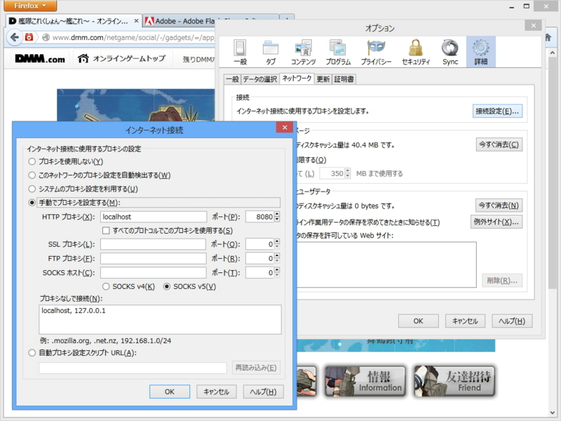
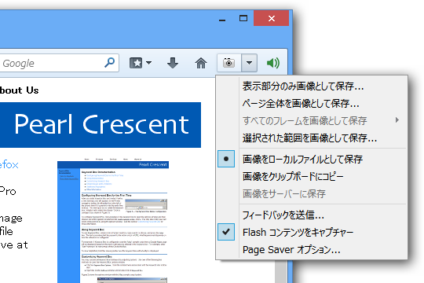
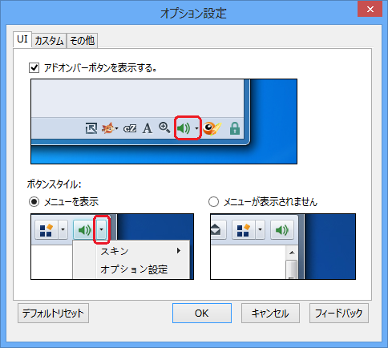
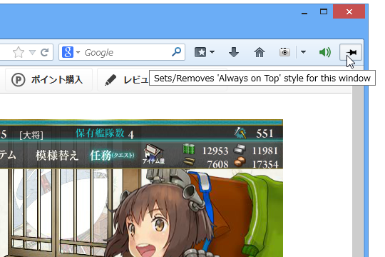

Firefox を艦これ仕様にしてみたった。
公開日：

「航海日誌」は、オンラインゲーム“艦隊これくしょん -艦これ-”向けの支援ソフト。Windows/Mac OS X/Linuxに対応する寄付歓迎のフリーソフトで、本ソフトの公式サイトからダウンロードできる。なお、動作にはJavaランタイム（JRE）が必要。
かれこれ三週間ぐらい使ってるけど、なかなかいい感じ。
「Google Chrome」はシステムのプロキシ設定を使うみたいなので、独自にプロキシを設定できる「Mozilla Firefox」を艦これ専用ブラウザーにしている。

でも、これだけだとスクリーンショット機能とミュート機能がないんだよね。そこで拡張機能で補ってみる。
Pearl Crescent Page Saver Pro

Flash もバッチリ撮れるスクリーンショットツール。Free と Pro （15米ドル）があって、試しに Pro を買ってみたけれど、まぁ、Free で十分だと思った（Pro だとコマンドラインで使えたりする）。ショートカットキーを指定できるのもグッド。
欲を言えばあらかじめ指定した矩形のみをキャプチャーなんて言う機能があればゲーム画面だけを切り抜けていいと思うのだけど（フィードバックはしておいた）、あとでバッチ処理してもいいと思う。
yxl/Firefox-Muter @ GitHub

ずばり「消音 :: Add-ons for Firefox」という名のこの拡張機能を使えば、「Mozilla Firefox」だけをミュートにすることができる（意外なことに、「Google Chrome」では拡張機能からこれができないらしい（【レビュー】「Google Chrome」で流れている音声をタブごとに停止・再開できる拡張機能「MuteTab」 - 窓の杜）。このことも「Mozilla Firefox」を選んだ理由の一つ）。
かつてはアドオンバーというクソバーにボタンが表示されるので気に入らなかったのだけど、最近のバージョンではツールバーも選べるらしい。入れておいて損のない拡張機能だと思った。
Always on Top :: Add-ons for Firefox

（2013/10/15 追記）
「Twitter 専用のサブディスプレイに最前面表示させておきたいなぁ」と思ったので、この拡張機能も導入しておいた。しょうもない（？）拡張機能だけど、これは割とイケる。ピリリと辛いとでもいいますかね。
おまけ
「航海日誌」を入れていれば不要なのだけど、mainami.com blog 出張版» ブログアーカイブ » 艦これタイマー for Firefox version 0.3 というのもある。建造の時間が見れるのが利点になるのかな。とはいえ、高速建造してしまえば建造のタイマーはあまり要らない気がする。